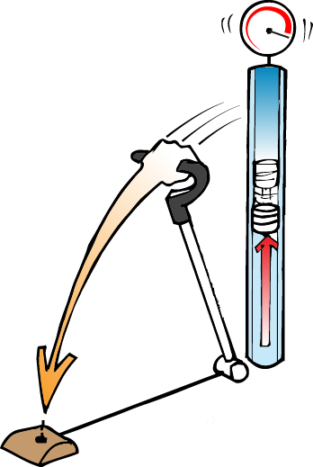

Left Compressor
Tap to Explore

Compress air in the Left Compressor…
and hold for 1, 2, 3. Watch the Graph and the Pressure Gauge respond.
Notice this:
The graph and the pressure gauge show the air pressure rising high at first, but then dropping a little.
 What’s happening?
What’s happening?
When you compress air, you generate heat and pressure. As some of that heat escapes through the Compressor walls into the surrounding air, the pressure drops a bit.
and hold for 1, 2, 3. Watch the Graph and the Pressure Gauge respond.
Notice this:
The graph and the pressure gauge show the air pressure rising high at first, but then dropping a little.
What’s happening?When you compress air, you generate heat and pressure. As some of that heat escapes through the Compressor walls into the surrounding air, the pressure drops a bit.
Expand air in the Left Cylinder.
Watch the Left Graph respond.
Notice this:
The pressure and temperature drops. The graph returns to zero, but the expansion line—or bottom curve—lies considerably below the compression line—or top curve.
So what?
The top curve of the graph represents your work compressing the air. The bottom curve represents work done by the air as it expands. The area between the curves shows how much work you have lost in the compression – expansion cycle through heat loss.
It takes work to compress air and generate heat. Lost heat is wasted work.
Watch the Left Graph respond.
Notice this:
The pressure and temperature drops. The graph returns to zero, but the expansion line—or bottom curve—lies considerably below the compression line—or top curve.
So what?
The top curve of the graph represents your work compressing the air. The bottom curve represents work done by the air as it expands. The area between the curves shows how much work you have lost in the compression – expansion cycle through heat loss.
It takes work to compress air and generate heat. Lost heat is wasted work.